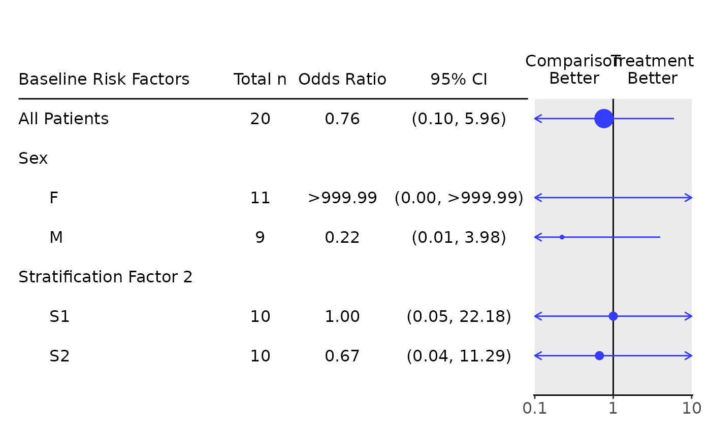
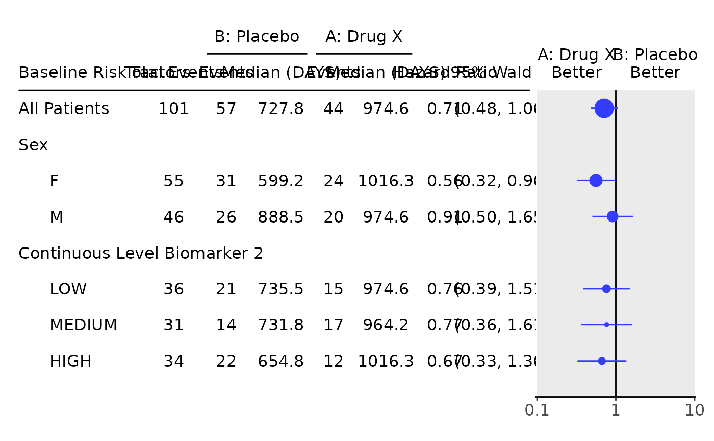
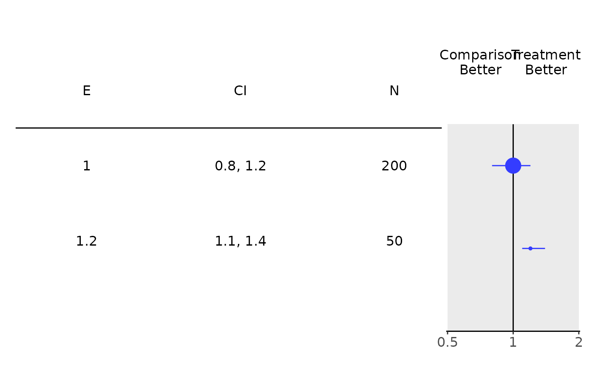
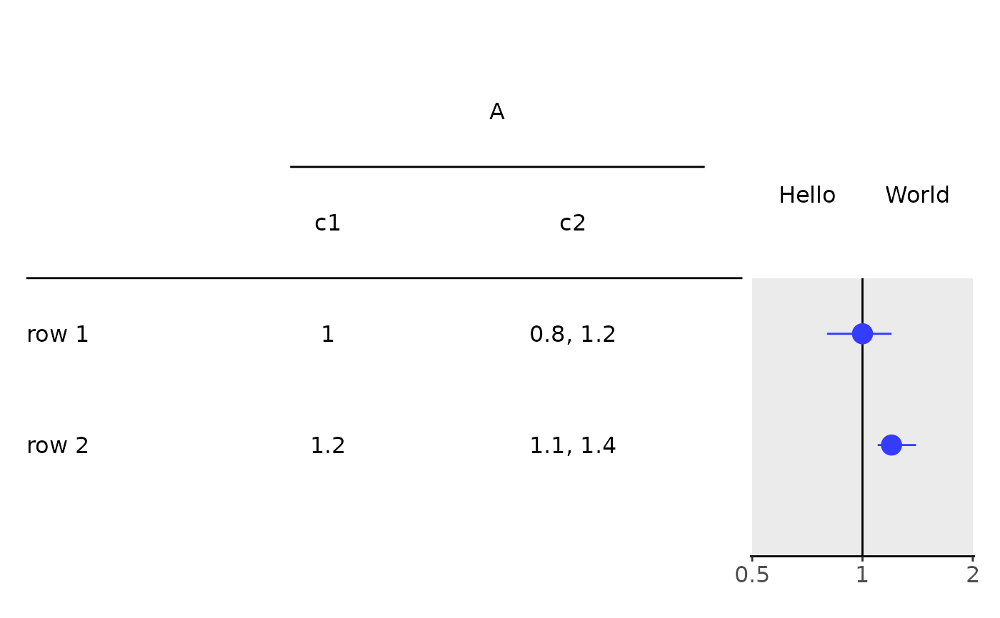

![[Stable]](figures/lifecycle-stable.svg)
Usage
g_forest(
tbl,
col_x = attr(tbl, "col_x"),
col_ci = attr(tbl, "col_ci"),
vline = 1,
forest_header = attr(tbl, "forest_header"),
xlim = c(0.1, 10),
logx = TRUE,
x_at = c(0.1, 1, 10),
width_row_names = lifecycle::deprecated(),
width_columns = NULL,
width_forest = lifecycle::deprecated(),
lbl_col_padding = 0,
rel_width_forest = 0.25,
font_size = 12,
col_symbol_size = attr(tbl, "col_symbol_size"),
col = getOption("ggplot2.discrete.colour")[1],
ggtheme = NULL,
as_list = FALSE,
gp = lifecycle::deprecated(),
draw = lifecycle::deprecated(),
newpage = lifecycle::deprecated()
)Arguments
- tbl
(
VTableTree)rtablestable with at least one column with a single value and one column with 2 values.- col_x
(
integer(1)orNULL)
column index with estimator. By default tries to get this fromtblattributecol_x, otherwise needs to be manually specified. IfNULL, points will be excluded from forest plot.- col_ci
(
integer(1)orNULL)
column index with confidence intervals. By default tries to get this fromtblattributecol_ci, otherwise needs to be manually specified. IfNULL, lines will be excluded from forest plot.- vline
(
numeric(1)orNULL)
x coordinate for vertical line, ifNULLthen the line is omitted.- forest_header
(
character(2))
text displayed to the left and right ofvline, respectively. Ifvline = NULLthenforest_headeris not printed. By default tries to get this fromtblattributeforest_header. IfNULL, defaults will be extracted from the table if possible, and set to"Comparison\nBetter"and"Treatment\nBetter"if not.- xlim
(
numeric(2))
limits for x axis.- logx
(
flag)
show the x-values on logarithm scale.- x_at
(
numeric)
x-tick locations, ifNULL,x_atis set tovlineand bothxlimvalues.- width_row_names
![[Deprecated]](figures/lifecycle-deprecated.svg) Please use the
Please use the lbl_col_paddingargument instead.- width_columns
(
numeric)
a vector of column widths. Each element's position incolwidthscorresponds to the column oftblin the same position. IfNULL, column widths are calculated according to maximum number of characters per column.- width_forest
- Please use the
rel_width_forestargument instead. - lbl_col_padding
(
numeric)
additional padding to use when calculating spacing between the first (label) column and the second column oftbl. Ifcolwidthsis specified, the width of the first column becomescolwidths[1] + lbl_col_padding. Defaults to 0.- rel_width_forest
(
proportion)
proportion of total width to allocate to the forest plot. Relative width of table is then1 - rel_width_forest. Ifas_list = TRUE, this parameter is ignored.- font_size
(
numeric(1))
font size.- col_symbol_size
(
numericorNULL)
column index fromtblcontaining data to be used to determine relative size for estimator plot symbol. Typically, the symbol size is proportional to the sample size used to calculate the estimator. IfNULL, the same symbol size is used for all subgroups. By default tries to get this fromtblattributecol_symbol_size, otherwise needs to be manually specified.- col
(
character)
color(s).- ggtheme
(
theme)
a graphical theme as provided byggplot2to control styling of the plot.- as_list
(
flag)
whether the twoggplotobjects should be returned as a list. IfTRUE, a named list with two elements,tableandplot, will be returned. IfFALSE(default) the table and forest plot are printed side-by-side viacowplot::plot_grid().- gp
-
g_forestis now generated as aggplotobject. This argument is no longer used. - draw
-
g_forestis now generated as aggplotobject. This argument is no longer used. - newpage
-
g_forestis now generated as aggplotobject. This argument is no longer used.
Details
Given a rtables::rtable() object with at least one column with a single value and one column with 2
values, converts table to a ggplot2::ggplot() object and generates an accompanying forest plot. The
table and forest plot are printed side-by-side.
Examples
library(dplyr)
library(forcats)
adrs <- tern_ex_adrs
n_records <- 20
adrs_labels <- formatters::var_labels(adrs, fill = TRUE)
adrs <- adrs %>%
filter(PARAMCD == "BESRSPI") %>%
filter(ARM %in% c("A: Drug X", "B: Placebo")) %>%
slice(seq_len(n_records)) %>%
droplevels() %>%
mutate(
# Reorder levels of factor to make the placebo group the reference arm.
ARM = fct_relevel(ARM, "B: Placebo"),
rsp = AVALC == "CR"
)
formatters::var_labels(adrs) <- c(adrs_labels, "Response")
df <- extract_rsp_subgroups(
variables = list(rsp = "rsp", arm = "ARM", subgroups = c("SEX", "STRATA2")),
data = adrs
)
# Full commonly used response table.
tbl <- basic_table() %>%
tabulate_rsp_subgroups(df)
g_forest(tbl)
# Odds ratio only table.
tbl_or <- basic_table() %>%
tabulate_rsp_subgroups(df, vars = c("n_tot", "or", "ci"))
g_forest(
tbl_or,
forest_header = c("Comparison\nBetter", "Treatment\nBetter")
)

# Survival forest plot example.
adtte <- tern_ex_adtte
# Save variable labels before data processing steps.
adtte_labels <- formatters::var_labels(adtte, fill = TRUE)
adtte_f <- adtte %>%
filter(
PARAMCD == "OS",
ARM %in% c("B: Placebo", "A: Drug X"),
SEX %in% c("M", "F")
) %>%
mutate(
# Reorder levels of ARM to display reference arm before treatment arm.
ARM = droplevels(fct_relevel(ARM, "B: Placebo")),
SEX = droplevels(SEX),
AVALU = as.character(AVALU),
is_event = CNSR == 0
)
labels <- list(
"ARM" = adtte_labels["ARM"],
"SEX" = adtte_labels["SEX"],
"AVALU" = adtte_labels["AVALU"],
"is_event" = "Event Flag"
)
formatters::var_labels(adtte_f)[names(labels)] <- as.character(labels)
df <- extract_survival_subgroups(
variables = list(
tte = "AVAL",
is_event = "is_event",
arm = "ARM", subgroups = c("SEX", "BMRKR2")
),
data = adtte_f
)
table_hr <- basic_table() %>%
tabulate_survival_subgroups(df, time_unit = adtte_f$AVALU[1])
g_forest(table_hr)

# Works with any `rtable`.
tbl <- rtable(
header = c("E", "CI", "N"),
rrow("", 1, c(.8, 1.2), 200),
rrow("", 1.2, c(1.1, 1.4), 50)
)
#> Modifying subtable (or row) names to ensure uniqueness among direct siblings
#> [ -> { , [2] }]
#> To control table names use split_rows_by*(, parent_name =.) or analyze(., table_names = .) when analyzing a single variable, or analyze(., parent_name = .) when analyzing multiple variables in a single call.FALSE
g_forest(
tbl = tbl,
col_x = 1,
col_ci = 2,
xlim = c(0.5, 2),
x_at = c(0.5, 1, 2),
col_symbol_size = 3
)

tbl <- rtable(
header = rheader(
rrow("", rcell("A", colspan = 2)),
rrow("", "c1", "c2")
),
rrow("row 1", 1, c(.8, 1.2)),
rrow("row 2", 1.2, c(1.1, 1.4))
)
g_forest(
tbl = tbl,
col_x = 1,
col_ci = 2,
xlim = c(0.5, 2),
x_at = c(0.5, 1, 2),
vline = 1,
forest_header = c("Hello", "World")
)
